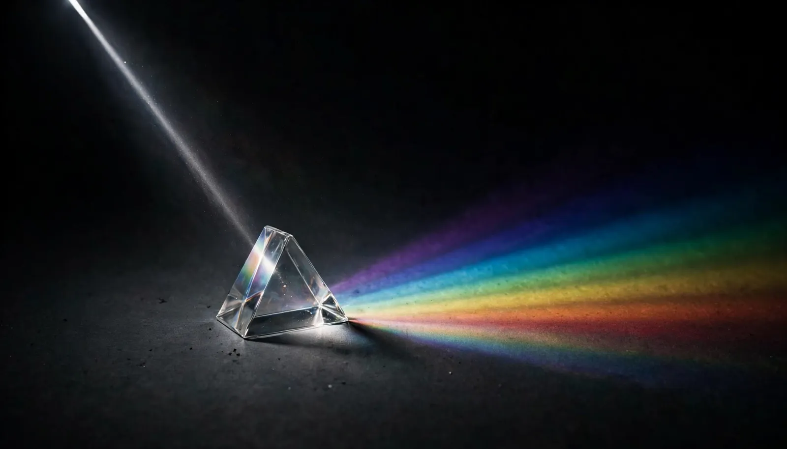
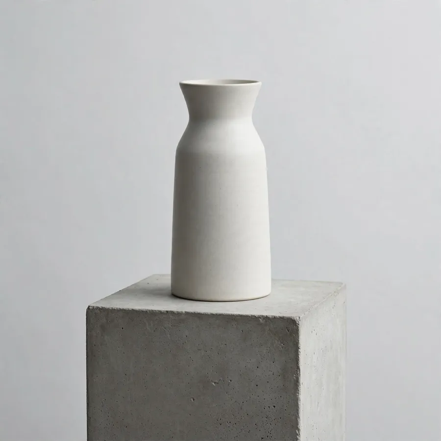

generate_image
Starting from nothingText in, images out. Use it for the first image of anything — and when you want several takes at once, since it's the only mode that returns up to 10 in a single call.

An MCP server that gives Claude Code, Claude Desktop and Cursor image generation powered by the Meta Muse model — and returns file paths instead of base64, so your context window survives.
Three modes
The three tools differ in one thing that matters more than the rest: whether the model remembers what you said last turn.
Text in, images out. Use it for the first image of anything — and when you want several takes at once, since it's the only mode that returns up to 10 in a single call.
Hand it an existing image — a local path or a URL — plus a full description of the change. Each call stands alone, so it's the right choice when you can state the target precisely. Multiple inputs compose into one scene.
The only mode with memory. Say warmer
, then too much, back off
, and it knows what you're talking about. Use it when you can't yet describe the destination, only the direction.
| generate_image | edit_image | iterate_image | |
|---|---|---|---|
| Remembers previous turns | No | No | Yes — via previous_response_id |
| Input image | None | Required, one or more | Optional, first turn only |
| Images per call | 1–10 | 1–10 | 1 |
| Default output format | png | png | webp |
| Endpoint | /images/generations |
/images/edits |
/responses |
A practical rule.
If you can write the finished result down in one sentence, use edit_image — it's cheaper to reason about and every call is reproducible. If you'd only know it when you see it, use iterate_image and talk your way there one nudge at a time.
Real output
Both pairs below came out of this server while this page was being built. They show the difference the comparison table above can only assert.
A weathered brass compass resting on an unfolded antique nautical map, warm afternoon window light, shallow depth of field, photographic still life
Change the warm afternoon light to cold blue moonlight, and add a light mist drifting over the map
One generate_image call, then one edit_image call against its result. The composition, the objects, the camera angle — all survive. Only the light changes, because that's all the instruction asked for.

A minimalist ceramic vase on a concrete pedestal, soft overcast daylight, clean studio background
Make the vase deep cobalt blue and add a single dried branch
Turn 2 sent one sentence and no image — just the id from turn 1. Notice what changed: not only the colour and the branch, but the vase's shape, the surface it stands on, the whole background. That's the honest difference between the two modes. edit_image preserves the frame; iterate_image continues the conversation and re-renders the scene. Reach for iterate when you're still exploring, and for edit once you know exactly what you want changed.
Every image on this page was made by this server. The prism at the top and all four frames here — generated during the build of this page, with the prompts printed next to them. Nothing is stock.
In practice
You don't call the tool. You say what you want, and the agent picks the tool, fills the parameters, and hands you back a path on disk.
Make me a wide hero image of a glass prism splitting light on a dark surface.
Cooler. Make it moonlight instead, and add some mist.
Paths, not pixels. The agent gets a file path back — a single line of context — and reads the image only if it actually needs to look at it. Generating twenty images costs you twenty lines, not twenty megabytes of base64.
Install
Published on npm. npx fetches and runs it on demand — there is nothing to install first.
This server uses Node's built-in process.loadEnvFile(), so anything below 20.12.0 fails at startup.
node -v
The key is the only required setting. Muse Image runs on the Meta Model API, so you register there, not with this project:
MUSE_API_KEY.Meta's own docs call this variable MODEL_API_KEY; this server reads it as MUSE_API_KEY, and talks to https://api.meta.ai/v1 with the model muse-image-1.0 by default. Reference: Model API docs · Image generation
-y matters — without it npx stops on an interactive prompt and the handshake never completes.
claude mcp add muse-image --scope user \ --env MUSE_API_KEY=your-key \ -- npx -y muse-image-mcp
For Claude Desktop or Cursor, write the config by hand instead:
{
"mcpServers": {
"muse-image": {
"command": "npx",
"args": ["-y", "muse-image-mcp"],
"env": { "MUSE_API_KEY": "your-key" }
}
}
}
MCP servers load at session start. An existing session will not pick it up — this is the most common "I installed it but the tools aren't there".
You should see muse-image: npx -y muse-image-mcp - Connected, and three mcp__muse-image__* tools available.
claude mcp list
Where do the images go?
By default <cwd>/generated-images, where cwd is whatever directory your client launched the server from — in Claude Code, your project root. Set MUSE_OUTPUT_DIR to an absolute path if you want them somewhere fixed.
Pricing
reasoning_strength: high and low cost the same — high is simply slower.